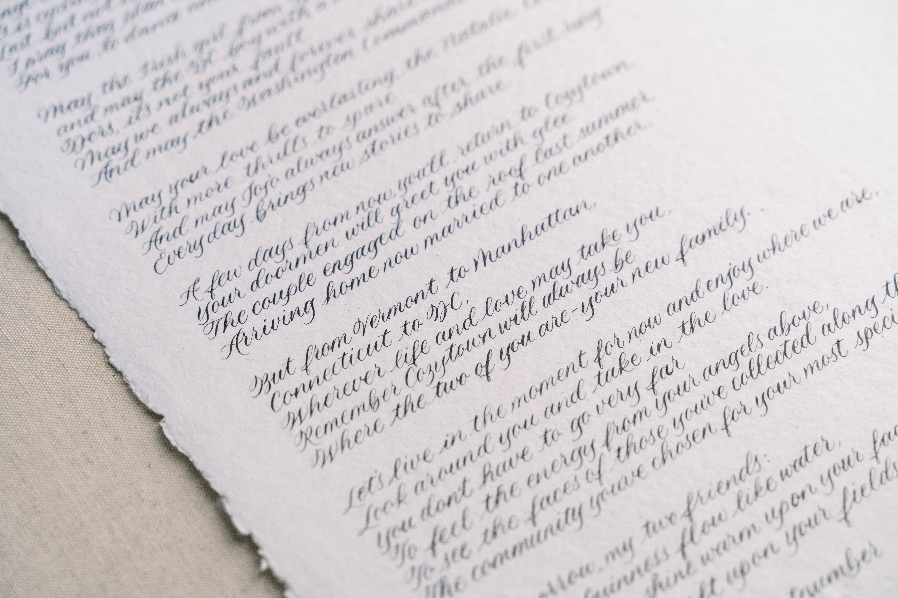

Every piece begins with your vision
Each detail is thoughtfully crafted so the final work feels timeless, personal, and beautifully made. These are some of the ways clients have incorporated calligraphy into their projects—but if you have something else in mind, I'd love to help bring it to life.

Engraved gifts
Personalize objects that will be treasured long after the occasion. From sleek perfume bottles and compact mirrors to cosmetic cases and glassware, engraving elevates everyday items into thoughtful, luxurious gifts.
Perfect for bridal parties, corporate gifting, or special milestones.

Custom calligraphy commissions
These handwritten designs could include vows, ornaments, certificates, artwork and more.
Ideal for weddings, anniversaries, milestone celebrations, or gifting to someone special.
Day-of items
Make every guest feel like a VIP with personalized items prepared in advance of your event. This could include paper and non-paper place cards and signage.

Hot foiled designs
Add a touch of metallic elegance to further elevate leather goods, fabric/silk items, or stationery and packaging.
Examples can include luggage tags, notebooks, gift boxes, and ribbons.

Spot calligraphy
Digitized calligraphy to be reused on whichever surfaces you want. Often clients will use this service for invitations, menus, and event decor like floor projections/decals.